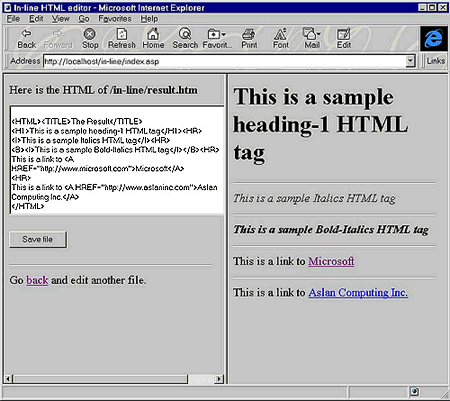
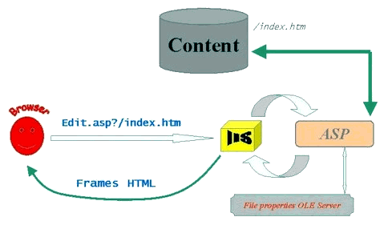

|
| ||
|
| ||
Kannan Ramasubramanian
Aslan Computing, Inc.
April 3, 1997
Download this
document in Microsoft Word format (zipped, 154K).
The In-line HTML Editor is an application based on the Active Server Pages (ASP) technology. The Editor serves as a tutorial for learning the concepts of ASP and Visual Basic® Scripting Edition (VBScript), and writing components using DLLs written in Visual Basic. It is also a complete application that can be deployed on a small Internet/intranet Web site to edit and preview HTML content on the Web server.
Contents
Introduction
The Application
The Communication Process
Building the Application
The ASP and HTML
Files
The Visual Basic Files
Potential for Improvement
Refreshing the Right
Frame
Improving
Security
Adding ActiveX
Controls
Error Checking
Installing the In-line HTML Editor
Web content developers certainly appreciate feature-rich client-side applications (such as Microsoft® FrontPage™) that help them create functionally sophisticated pages. However, it is also often desirable to have a simple, scaled-down application that allows developers to edit Web pages on the Web server itself. I built the In-line HTML Editor with this goal in mind, based on my experiences as a Webmaster who needed to provide a way for HTML developers to edit existing content on a Web site. Moving the bulk of the editing work from the client to the server allowed me to implement this functionality, thereby providing an open client access mechanism.
The In-line HTML Editor allows a content developer to request a URL in the form "http://internet-name/sample.htm". The browser displays a standard HTML form that prompts the content developer for the URL of the file that needs editing, for example, /whatsnew/index.htm. The server then launches a frames-based HTML page that shows the requested Web page in the right frame and the HTML code for the page in the left frame. The developer can edit the HTML code on the left, press the Save File button, and preview the changes made by refreshing the frame on the right.
The In-Line HTML Editor uses Active Server Pages (ASP) in conjunction with Internet Information Server (IIS) version 3.0. The server-side application also includes an OLE Automation server for file functions that are not natively provided by the ASP technology.
In addition to serving as a worthwhile exercise in ASP, Visual Basic® Scripting Edition (VBScript), and OLE Automation, the In-Line HTML Editor is a simple but useful application. All you need is a browser that supports frames, and voila! You can fix HTML bugs on a Web site while sitting in a café, sipping cappuccino -- blissfully unaware of FTP and network drive connection hassles!
To install the In-line HTML Editor, follow the instructions provided at the end of this article.
The In-line HTML Editor resides on the Web server, along with your CGI and ISAPI scripts. The application allows content developers to edit HTML content residing on the server using only a frames-capable browser, without having to download the HTML files locally to their machines.
In Figure 1, the left frame shows the HTML code for the page shown on the right. The content developer enters the Web server relative path to the file that needs editing.

The editing process (shown in Figure 2) consists of ten steps:

Let's take a closer look at the files involved in the application to understand how the In-line HTML Editor works.
| Filename | Purpose |
|---|---|
| Filename | Purpose |
| global.asa | The global declarations file for ASP. |
| edit.htm | The initial forms-based HTML file that accepts the URL to edit. |
| index.asp | ASP application file for creating frames-based HTML. |
| main.asp | The main application file that retrieves the source to the HTML file to edit, displays it in the textbox for editing, and saves it when the user clicks the Save File button. |
As in any other programming language, one of the most important files in an application that uses server-side scripting is the global declarations file. This file must be called global.asa and reside in the same directory with all the other application pages. This file is used to declare all global, session-wide, and application-wide variables. It also houses function modules that allow us to insert code to do housekeeping tasks when the application or a session starts and stops.
The code listing below shows the variable declarations necessary for our application. We have declared three variables -- filename_value, URL_tofile, and myText -- as session variables. We placed these variables in the Session_OnStart() subroutine so they would be initialized to empty strings every time a session starts.
Listing 1: global.asa
<SCRIPT LANGUAGE=VBScript RUNAT=Server>
SUB Session_OnStart
session("filename_value")=""
session("URL_tofile")=""
session("myText")=""
END SUB
</script>
A complete explanation of session and application variables is beyond the scope of this article. More information is available in the online documentation (Active Server Pages Roadmap) provided with Internet Information Server (IIS) version 3.0. Suffice it to say that these variables are made available to our application across various ASP pages on a "per-session" instance. I'll explain the use of these variables in detail in the sections below.
This is the initial file that serves as the entry point into the application. The user invokes this file to start editing content on the server.
A cursory glance at Listing 2 below reveals a humble HTML form page with a text box that accepts a string into a variable named URLname. The ACTION parameter is set to "index.asp". Note the .ASP extension. This is the cue for IIS to invoke the Active Server Pages component. We will dissect the index.asp file later in this article. Note the hidden variable calledFromEdit that is being passed from the form. This is our application's little flag that gets passed on just to make sure that the application is being called the right way, from the correct entry points.
Listing 2: edit.htm
<HTML> <TITLE>In-line HTML editor</TITLE> <FORM METHOD=POST ACTION="index.asp"> <P> <HR> <B>Please type in the Web-relative pathname of the file you want to edit (for example: /in-line/result.htm).</B> <P> <INPUT TYPE=HIDDEN NAME="calledFromEdit" VALUE="True"> <INPUT TYPE=TEXT NAME="URLname" SIZE=50><P> <P> <INPUT TYPE=SUBMIT VALUE="Edit and View"> <P> <HR> </FORM> </HTML>
The next file of interest is index.asp, which is called to ACTION by the form above.
In index.asp (see listing 3.a), we see the NULL error handler, which tells the ASP component to ignore any errors in execution and proceed. The first execution block in the application checks the value of the calledFromEdit variable, which we passed from edit.htm with a value of True. This check tells the application whether it has been invoked correctly. If the check returns False, we use the META tag in HTML to redirect the browser back to edit.htm. The application then proceeds to store the URL of the file (after forcing a leading /) and the absolute path of the file (using the mappath() method of the server component) as session variables, thus making them accessible to the entire application.
Listing 3.a: index.asp
<%
on error resume next
%>
<HTML>
<TITLE>In-line HTML editor</TITLE>
<%
REM Make sure that index.asp is called only by edit.htm.
if Request.Form("calledFromEdit") <> "True" then %>
<B><I>
<%
REM If not, print out a message and automatically point
REM the browser to edit.htm.
response.write("Beg your pardon. You cannot enter unescorted. Please wait.")
REM The following line is necessary for browsers that do not
REM support META tags.
response.write(" <BR %\>Or click <A href=edit.htm %\>here</A %\>.")
response.write("<META HTTP-EQUIV=REFRESH CONTENT=3;URL=edit.htm %\>")
%>
</B></I>
<%
response.end
end if
%>
<%
REM Get the URLname field from the previous form into a
REM local variable.
temp_file=Request.Form("URLname")
' force a leading slash
if left(temp_file,1) <> "/" then
temp_file = "/" & temp_file
end if
REM Store the variable as a session variable so that
REM we can have access to it across the entire
REM application.
session("URL_tofile")=temp_file
REM Get the absolute drive mapped path to the URL
REM into a session variable.
session("filename_value")=server.mappath(temp_file)
%>
We then add several features that are not provided by ASP to the application (see listing 3.b). For example, we need a method to verify the existence of a file on the server. The component-based architecture of IIS and ASP allows us to make our own components using other tools and development environments (for example, Visual C++® or Visual Basic) and call these components from our application, so that's precisely what we did. Using Visual Basic 4.0, we created an OLE server called fileprops.dll and registered it on the server. The OLE server makes our own file functions that are not included in ASP's built-in component list available to the application. We shall learn more about the OLE server as we proceed.
Listing 3.b: index.asp, cont'd
<%
REM Call FileProps OLE server to check if file exists.
Set FileProps = Server.CreateObject("MS.FileProps")
findOut=FileProps.FindFile(session("filename_value"))
if findOut = 0 then %>
<B><I>
<%
REM If the file does not exist, take the browser back to
REM edit.htm to choose another file to edit.
response.write("The file ")
session("filename_value")
response.write(" does not exist. Please wait while you are taken back")
response.write(" <BR %\>or you may click <A href=edit.htm %\>here</A
%\>.")
response.write("<META HTTP-EQUIV=REFRESH CONTENT=3;URL=edit.htm %\>")
%>
</B></I>
<%
response.end
end if
%>
Once the check for the existence of the requested file has been carried out, we either point the browser back to edit.htm or proceed with the application, depending on the result of the check.
The last step (Listing 3.c below) is to create the frames-based HTML page with two frames appearing side by side. We call the URL for the requested file so that it appears in the right frame, and we invoke main.asp to display in the left frame.
Listing 3.c: index.asp, cont'd
<%
REM If the file does exist and is accessible, create the frames
REM page with the URL to the file on the right, and our
REM main.asp application page on the left.
%>
<FRAMESET COLS="50%,50%">
<FRAME src="main.asp" NAME="left-frame">
<FRAME src= "<%= session("URL_tofile")%>"
NAME="right-frame">
</FRAMESET>
</HTML>
Listing 4.a starts off with a check for a variable named myhname. This check tells us whether this application is being invoked by itself (that is, if we have already been through this particular application page) or not. If the check evaluates to False, we use the "textstream" component of ASP to open the requested HTML file for "read" access and read in the contents of the file, line by line, into a session variable named myText.
Listing 4.a: main.asp
<%
On Error Resume Next
If Request.Form("myhname") = "" Then
REM If this is the first time the form is being invoked, then read
REM contents of HTML file into variable.
session("myText") = ""
REM Open the URL specified in the earlier edit.htm file for
REM reading.
Set FileObject = Server.CreateObject("Scripting.FileSystemObject")
Set InStream = FileObject.OpenTextFile(session("filename_value"), 1, FALSE, FALSE)
REM Read the entire contents of that file into a variable.
session("myText") = InStream.ReadLine
do while not InStream.AtEndOfStream
session("myText") = session("myText") & chr(10) &
Instream.ReadLine
loop
REM Close the file.
Set Instream=Nothing
%>
After reading in the content, we create a standard form-based HTML page (Listing 4.b) with a text area, and fill in the text area with the myText variable, which now contains the content of the HTML page to be edited. The form also has a button called "Save File" of type "Submit" (a standard HTML feature), which invokes the application specified in the <FORM ACTION> tag, which, in our case, is the current application (main.asp). This is typical of ASP: By calling an application within itself, we can respond to different triggers and actions, thus creating completely dynamic content.
Note that when we need to display HTML tags within an HTML page (in our application, we show the contents of an HTML file within the text area of another HTML page), we need to code special characters such as "<" and ">" to make sure that the browser does not treat them as actual HTML tags. This is the reason we translated all instances of "<" and ">" to "<" and ">" in the code below.
Because this application serves both as the form and as the action, we pass the hidden variable myhname to indicate which pass we are currently on.
Listing 4.b: main.asp, cont'd
<HTML>
<TITLE>In-line HTML editor</TITLE>
<FORM METHOD=POST ACTION="main.asp">
Here is the HTML of
<B>
<%response.write(session("URL_tofile"))%>
<BR>
<BR>
</B>
<P>
<TEXTAREA NAME="Text_Area" Rows="10" COLS="60" >
<%
REM Read the text one character at a time and write into HTML
REM with necessary formatting for handling special characters.
%>
<% for i = 1 to len(session("myText"))
if mid(session("myText"),i,1)=">" then
myChar=">"
else
if mid(session("myText"),i,1)="<" then
myChar="<"
else
myChar=mid(session("myText"),i,1)
end if
end if
response.write(myChar)
next
%>
</TEXTAREA>
<P>
<INPUT TYPE=HIDDEN NAME="myhname" VALUE="hvalue"><BR>
<P>
<INPUT TYPE=SUBMIT VALUE="Save file">
<P>
<HR>
Go <A href="edit.htm" target="_parent">back</A>
and edit another file.
</FORM>
</HTML>
If the myhname variable check evaluates to True (see Listing 4.c), we know that the user has pressed the Save File button on our form. We then proceed to read in the contents of the text area, which the user may have modified, open the requested HTML file for write access, and write in the contents of the text area, which has been modified and submitted by the user. We can now refresh the frame on the right to see the new version of the HTML file with all the editing changes implemented.
Listing 4.c: main.asp, cont'd
Else
REM If form has been submitted previously,
REM reset the hidden variable to make Active Server think
REM that the form has not been submitted.
response.form("myhname")=""
REM Check to see if the text area is blank.
If Request.Form("Text_Area") = "" Then
REM If it is, just substitute empty content with
REM <HTML></HTML>.
text_area_content="<HTML></HTML>"
Else
REM Otherwise, get the text from the text area into a
REM variable.
text_area_content=request.form("Text_area")
End if
session("myText") = text_area_content
REM Write the contents of the text area to the actual HTML
REM file that is being displayed in the right frame.
REM Open the absolute filename for writing in ASCII.
REM Overwrite if it exists.
Set MyFileObject = Server.CreateObject("Scripting.FileSystemObject")
Set OutStream = MyFileObject.CreateTextFile(session("filename_value"), TRUE, FALSE)
REM Write in the contents of the text area.
OutStream.WriteLine text_area_content
REM Close the text file.
Set Outstream=Nothing
End If
%>
In addition to the four files we described above, the In-line HTML Editor has a Visual Basic OLE server component called fileprops.dll.
The most important and almost only piece of code in the FileProps OLE server is the FileProps class module (fileprops.cls).
As is evident from Listing 5 below, this is probably the most simple and scaled-down DLL one can possibly develop. We simply create a function called FindFile, which calls the Visual Basic Dir() function to check for the existence of a file on the system. If the check evaluates to NULL (that is, if the file does not exist), the function returns 0; else it returns 1. This function can now be called from any application as long as we can make a DLL out of our FileProps application and register it on the server.
Listing 5: fileprops.cls
Public Function FindFile(fileName As String)
If Dir(fileName) = "" Then
FindFile = 0
Else
FindFile = 1
End If
End Function
When we tie all the components discussed above together, we have a complete application that can be implemented on any server running IIS 3.0.
Although we managed to build a fairly simple, yet useful application in a relatively short period of time, we barely scratched the surface of the Active Server Pages technology. The following ideas are provided as suggestions for application developers who wish to build on top of our current In-line HTML Editor application.
When you use the In-line HTML Editor, you will run into a bug I never got around to fixing: When you edit the HTML file and press the Save File button, the right frame does not change. In other words, you need to do a manual browser refresh in the right frame to reflect the editing changes you made. This fix is left as an exercise for the reader.
Tip: You could use the HTML <META> tag or maybe some scripting to change this behavior.
A key feature that should be added to this application before you use it in a production environment is enhanced security. Currently, the In-line HTML Editor uses native IIS user privileges, which rely on the Windows NT® user database for security. Since the In-line HTML Editor allows content developers to edit content directly on the server, security has to be foremost in the minds of system administrators. You will need to ensure that users who aren't responsible for changing or deleting content on the site do not have access to the application.
What's a site without an ActiveX™ control or two? ActiveX controls make a site dynamic and more appealing to users. This application could really use some ActiveX controls to spice it up. Here are my recommendations:
Search. Since we are trying to replace content developers' favorite HTML editing mechanism (Notepad), it is only fair that we provide them with nearly everything that Notepad includes. The major features of Notepad that are missing from our application are Find, Find Next, and Replace. With a little bit of VBScripting and a button/menu control, you could add these features to our little editor and provide nearly complete Notepad functionality.
Text box control. Another good touch would be to dispense with the TEXTAREA box provided by HTML and replace it with a regular text box control, to provide resizing, menu bars, pop-up menus, and other features.
File browser. One final change I'd recommend is to add a tree/browser control that would allow users to choose the file that needs to be edited (instead of prompting the user for a URL). This way, the user does not need to know the URL to the file to be edited, and the application becomes easier to use.
Error checking and recovery are extremely important in a Web application developed using ASP, as they are to any other application. The current In-line HTML Editor contains almost no error-handling routines. Before you deploy the application in a production environment, I would recommend adding extensive error checking and recovery mechanisms using VBScript's inherent error-trapping features (for example, ON ERROR).
Follow these steps to install the In-line HTML Editor on your system:
This will create the .ASP, .ASA, and .HTM files in the directory. It will also create two subdirectories -- FileProps and Source -- under the in-line directory. The FileProps directory contains the installation files for the OLE server, and the Source directory contains the Visual Basic project source files for the OLE server.
This will install and register the FileProps DLL on your server.
Please send comments and suggestions about the In-line HTML Editor to kanna@aslaninc.com. I would also like to hear about other modifications and feature additions that you decide to make to the application. Kannan Ramasubramanian graduated from the Government College of Technology, India, with a B.S. in Computer Technology. Currently working with Aslan Computing Inc. located in Palo Alto, CA, as a network consultant, he provides Internet/intranet solutions and Web-related development and services to clients.
Did you find this material useful? Gripes? Compliments? Suggestions for other articles? Write us!
© 1999 Microsoft Corporation. All rights reserved. Terms of use.